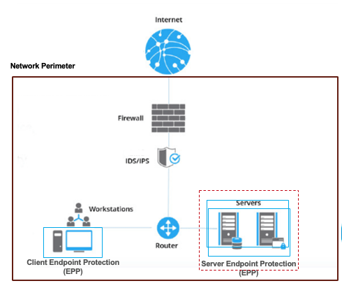
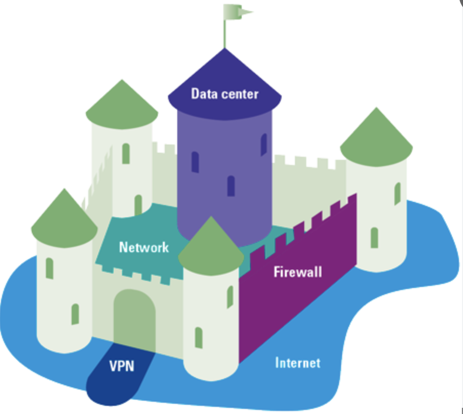
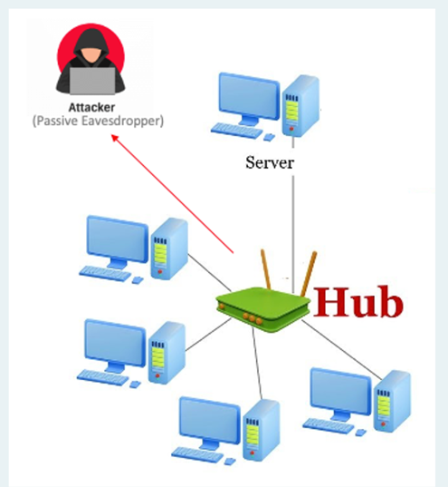
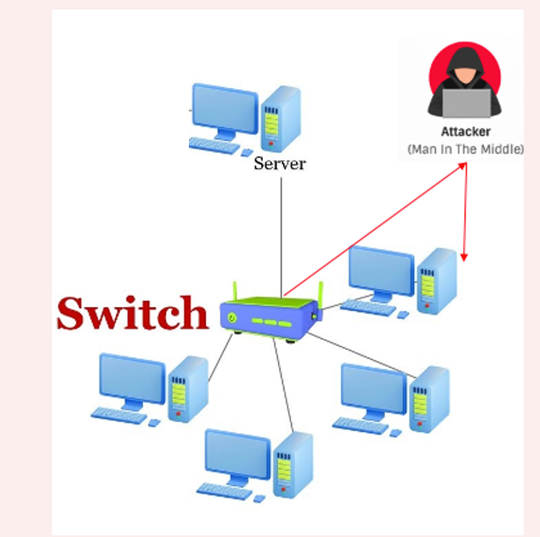
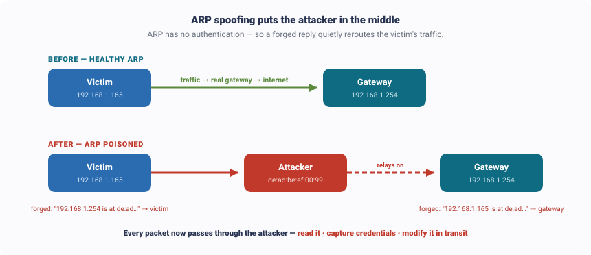

← Course home · Ethical Hacking
Week 4 · Network Hacking & Sniffing¶
🧭 Kill chain · Phase 3 — Gaining Access (the quiet way)
ATT&CK T1040 Network Sniffing T1557 Adversary-in-the-Middle T1557.002 ARP Cache Poisoning TA0005 Defense Evasion
This week alternates between the 🔴 attacker's move and the 🔵 blue team's answer — the coloured line down the left tells you which one you're reading.
🔴 RED TEAM · the attack
What you'll learn
- Where we are in the CEH kill chain — Phase 3, gaining access — and the two ways in
- The quiet way: reading a password straight off the wire — and how the blue team answers it (encrypt everything + the firewall)
- Once inside, why listening to the network is reconnaissance from within — passive vs. active sniffing
- ARP spoofing — becoming the man in the middle — and the blue-team answer (detect, inspect, segment)
1. Where we are: gaining access¶
We've been walking the attacker's life cycle — the CEH kill chain. We built the map (recon, Week 2), we tried the doors (scanning, Week 3), and now we're at Phase 3 — gaining access: actually getting in.
2. What the attacker is breaking into¶
Before picking a lock, be clear on what we're breaking into. Companies wrap their internal network in a strong perimeter that separates the inside from the open internet — and everything valuable lives behind it.


3. The layers of defense — and where this week fits¶
Defenders never rely on one wall. They build layers — the outermost is the network (the perimeter); inside are the device, the applications, the data, and at the very core, identity. The whole course walks these layers from the outside in. This module, Storming the Perimeter, is the outermost ring — everything this week attacks the network layer.
↑ Click a layer — the red ring (Network) is where we are this week
🌐 Network — the perimeter ◀ this week¶
Controls what traffic is even allowed onto the network: firewalls, IDS/IPS, the DMZ, and segmentation.
We attack it in: Recon · Scanning · Network Hacking & Sniffing (here) · Wireless
💻 Device — the endpoints¶
Hardening the machines: OS patching, antivirus/EDR, disk encryption, host firewalls.
We attack it in: System Attacks · Malware, Trojans & DoS
⚙️ Application — the software¶
Code that isn't exploitable: secure coding, authn & authz, web application firewalls.
We attack it in: Web Attacks I · Web Attacks II — SQLi
🗄️ Data — the information¶
Protecting the data itself: encryption, backups, tight access control — what attackers ultimately want.
We attack it in: Cryptography
🪪 Identity — the core¶
Who can log in and what they can do — MFA, IAM, least privilege. Break identity and you don't hack in, you log in.
We attack it in: Social Engineering & the Identity Layer
⚖️ Read this first — is sniffing even legal?
Last week's recon was passive and legal; scanning was active and needed authorization. Sniffing is more subtle. Even if you send not a single packet and "just listen," capturing traffic that isn't yours can be wiretapping — a crime. And ARP spoofing, later on, is fully active — you inject forged packets. So everything here runs only on your own lab, your own VMs, your own traffic.
4. Two ways in — find a key, or kick the door¶
| 🔑 Find the key (this week) | 🚪 Kick the door (Week 7) | |
|---|---|---|
| Method | Sniff the network; grab credentials off the wire | Exploit a weak service and force entry |
| Noise | Quiet — often nothing is "broken" | Loud — crashes, alarms, logs |
| You walk in with | A stolen key | A broken lock |
A real attacker tries to find a key before kicking any doors — quiet before loud. So let's take the quiet way.
5. The quiet way — grab a password off the wire¶
Any protocol that sends its data unencrypted — HTTP, FTP, Telnet, old SMTP, legacy database links — hands its username, password, and content to anyone on the path. Picture the attacker on the same coffee-shop Wi-Fi as you: you log into a plain HTTP site, and your password crosses the wire in plain text. No exploit, nothing broken — they read the key off the wire and log in as you.
Live demo — see a password in the clear (authorized target)
http://demo.testfire.net is a deliberately vulnerable practice app (a fake bank) put online for exactly this. Log in with DemoUser / DemoPassword123 over plain HTTP, capture with Wireshark, then Follow → HTTP Stream on the POST /doLogin — the uid and passw are right there in the request body. Follow an HTTPS stream and it's just opaque bytes. That contrast is the lesson.
🌐 Real-world case — Firesheep (2010)
A developer released Firesheep, a one-click Firefox add-on that sniffed unencrypted session cookies on open Wi-Fi and let anyone log in as other people on Facebook, Twitter, and more. Sites had moved login to HTTPS — but were still sending the session cookie back in the clear, so it could be grabbed and replayed. It wasn't new tech; it just made cleartext sniffing so public it pushed the whole web to HTTPS-everywhere.
So if the quiet way is just reading the wire — how does the blue team shut it down?
🔵 BLUE TEAM · the answer to the quiet way
6. How the blue team stops the quiet way¶
Encrypt everything — and guard the front door
- Encrypt everything in transit. This is the direct antidote to what Firesheep showed: if the traffic is HTTPS/TLS, a listener captures only useless bytes. It's the single reason the whole web moved to HTTPS — and it's the wall you saw in the demo.
- The firewall at the perimeter. The firewall is the gate: it blocks connections that aren't allowed in (you met it in Week 2 as
filteredports). It's the first thing between the outside and the network.
Cat and mouse: attackers try to slip the firewall by tunneling — hiding traffic inside something it already allows, like HTTPS or DNS. So the perimeter alone is never enough — which is exactly why we assume, next, that the attacker got in anyway.
🔴 RED TEAM · now the attacker is inside
7. Inside the network — listening is recon from within¶
Assume the attacker got in — the perimeter only has to fail once (a phishing click, a rogue device on a jack, stolen VPN credentials, an exposed service). Inside, most enterprises are castle-and-moat — a hard shell but a soft centre — so the attacker roams with free movement across the internal network.
So what do they do first? They listen. And here's the key idea: listening to internal traffic is reconnaissance from the inside. Week 2's recon was outside-in — public records, never touching the target. This is inside the perimeter, reading live traffic to learn the real internal map: who talks to whom, which servers exist, what credentials cross the wire. A sniffer (Wireshark, tcpdump) captures those packets — and how easy that is comes down to the network gear:
👂PASSIVE — just listenon a hub · silent · invisible on the wire
🎯ACTIVE — force it to youon a switch · you inject packets
↑ Click each — the network gear decides the game
👂 Passive sniffing — on a hub¶
An old hub is a loudspeaker: every packet it receives is copied out to every port. So the attacker just plugs in, puts their card in promiscuous mode, and quietly hears everyone's traffic. Nothing is injected, nothing is sent — it's completely silent, with no way to detect it on the wire. If a network still runs on hubs, sniffing is basically free.

🎯 Active sniffing — on a switch¶
A modern switch is smarter: it learns which device is on which port and sends each frame only to its destination. So the attacker plugs in and hears almost nothing — just their own traffic and broadcasts. To grab anyone else's traffic they can't stay passive; they have to actively insert themselves into the path — and that starts injecting packets, which leaves fingerprints. The classic way to do it is ARP spoofing — the next section.

8. Becoming the man in the middle — ARP spoofing¶
On a local network, machines find each other by MAC address using ARP (Address Resolution Protocol) — a trusting protocol with no authentication. Whoever answers "who has this IP?" first is believed and cached. ARP spoofing abuses exactly that: the attacker sends forged replies telling the victim "I'm the gateway" and telling the gateway "I'm the victim." Now every packet flows through the attacker — a man-in-the-middle who can read it, capture credentials, or change it in transit.

Walk the attack, step by step. Click each step to see what happens on the wire — with the exact packets you'd point to in a Wireshark capture.
STEP 1Learn the next hopwho is the gateway
STEP 2Normal pathtraffic → real gateway
STEP 3Poison the cacheforged ARP replies
STEP 4Traffic reroutesnow via the attacker
STEP 5Read & relaythe man-in-the-middle
↑ Click a step — each shows what happens and the packets to look for
📇 Step 1 — learn the next hop's MAC¶
The victim (192.168.1.165) wants to reach 8.8.8.8 — which is out on the internet, not on the LAN — so the next hop is the gateway 192.168.1.254. To send even one frame it needs the gateway's MAC, so it broadcasts an ARP request: "Who has 192.168.1.254?" The gateway replies with its real MAC, and the victim caches it.
🔎 In a capture: a broadcast who-has request, then a unicast is-at reply — the reply nobody authenticates.
➡️ Step 2 — the normal path¶
With the gateway's real MAC cached, the victim's traffic (say a ping to 8.8.8.8) leaves with the destination MAC = the real gateway. Everything flows correctly out to the internet. This is the "before" picture — show it first so the change stands out.
🔎 In a capture: the outbound packet's Ethernet destination is the gateway's real MAC (ec:c3:…:c1).
☠️ Step 3 — poison the cache¶
The attacker (192.168.1.199, MAC de:ad:be:ef:00:99) sends unsolicited ARP replies — ARP has no rule that says "only accept a reply if I asked," so the victim's cache happily overwrites the good entry: 192.168.1.254 → de:ad:be:ef:00:99. A matching lie goes to the gateway. The attacker repeats every couple of seconds so the real gateway's legit replies never win the entry back. (Tools: Ettercap, bettercap, arpspoof.)
🚩 In a capture: this is the tell — Wireshark raises "Duplicate IP address configured" (one IP, two MACs).
🔀 Step 4 — the traffic reroutes¶
Same lookup, poisoned answer. The victim's next packet to 8.8.8.8 now leaves with destination MAC = the attacker. The IP addresses are unchanged (192.168.1.165 → 8.8.8.8) — only the MAC hopped. That's why a man-in-the-middle is nearly invisible if you only read Wireshark's default Source/Destination (IP) columns.
🔎 In a capture: the Ethernet destination on the identical packet is now the attacker's MAC — add eth.src / eth.dst columns to see it.
🕳️ Step 5 — read & relay (the MITM)¶
The attacker receives the victim's traffic, reads it (grabbing any cleartext credentials or cookies), and forwards it on to the real gateway — keeping the victim's connection alive so nothing looks broken. He doesn't rewrite the IP source, because if he did the reply would come back to him and tip the victim off. He's a silent relay, sitting in the middle of every conversation.
🔎 In a capture: the relayed packet keeps the victim's IP as source but rides the attacker's MAC — proof of the man-in-the-middle.
📢 Real-world case — Superfish (2015)
Lenovo shipped laptops with adware that installed its own root certificate to break HTTPS and inject ads — a factory-installed man-in-the-middle. Because a browser trusts a certificate authority to prove a site is who it claims, Superfish forged that trust locally so it could sit in the middle of encrypted sessions. Worse, it was so poorly secured that third parties could ride it to intercept banking traffic. Millions in fines followed.
🔏 Real-world case — DigiNotar (2011)
Attackers breached a certificate authority and forged Google certificates, then used them to man-in-the-middle Gmail for ~300,000 people in Iran. Same idea as Superfish — break the trust that HTTPS relies on — but at internet scale.
The attacker's whole aim inside is to stay invisible while they listen and intercept. So — how does the blue team catch someone who's already in?
🔵 BLUE TEAM · the answer to the attacker inside
9. How the blue team catches the intruder¶
Detect the active moves — and contain them
Encryption from the last stage already does the heavy lifting: a passive listener just gets useless bytes. The hard part is that a pure listener is invisible — so once they go active, the blue team's job is to catch it and limit the blast radius.
- IDS / IPS (Snort, Suricata) watch for anomalous behaviour — a machine suddenly claiming to be the gateway, the "Duplicate IP address" from ARP poisoning, or traffic that just looks wrong. (Cat and mouse: attackers evade by encrypting, fragmenting, and changing timing — so detection leans on patterns, not just signatures.)
- Honeypots — decoy systems planted on the network; the moment an intruder pokes one, it fires a high-confidence alert, because a real user never would.
- Dynamic ARP Inspection + port security on switches — verify ARP replies and block the spoofing that makes active MITM possible in the first place.
- Network segmentation — so a foothold in one corner (the soft castle interior, and the Target breach) can't sniff or reach everything.
Passive listening you can't hear — so you make what they hear worthless (encrypt), block the active moves (ARP inspection), watch for the fingerprints (IDS/IPS, honeypots), and box them in (segmentation).
10. What's next¶
Try it yourself — only on your own lab and your own traffic
- See cleartext: capture your own login to
http://demo.testfire.net(DemoUser/DemoPassword123), then Follow → HTTP Stream thePOST /doLogin. Compare against an HTTPS stream — opaque. - Read ARP: open any capture, filter
arp, find a who-has request paired with its is-at reply, and ask who verified that reply? (Nobody — that's the hole.) - Spot poisoning: in a capture with ARP spoofing,
Analyze → Expert Informationflags "Duplicate IP address configured." Add Hardware Source/Dest Address (eth.src/eth.dst) columns and watch the same IP hop onto a new MAC.
Next week → we open the hood on the shield itself — Cryptography: how encryption actually protects the wire, and how attackers break it. Then Wireless Hacking (Week 6) takes the same idea into the air, and in Week 7 we finally kick the door in — exploiting a weak service instead of finding a key.
Where this maps in MITRE ATT&CK
MITRE ATT&CK is a free public catalog of real attacker techniques, each with an ID. This week maps to T1040 (Network Sniffing), T1557 (Adversary-in-the-Middle) and its sub-technique T1557.002 (ARP Cache Poisoning), and the evasion side to TA0005 (Defense Evasion). Browse it at attack.mitre.org.
Remember
Network hacking is the quiet way in. Outside: cleartext hands you a key → the blue team encrypts everything and guards the perimeter with a firewall. Inside: listening is recon from within — passive on a hub, active (ARP spoofing → MITM) on a switch → the blue team detects the active moves (IDS/IPS, honeypots), inspects ARP, and segments the network. Attack, then answer, at every step.
References¶
- Wireshark User's Guide. wireshark.org/docs
- MITRE ATT&CK — Adversary-in-the-Middle (T1557) · ARP Cache Poisoning (T1557.002) · Network Sniffing (T1040). attack.mitre.org
- NIST SP 800-115 — Technical Guide to Information Security Testing. Free PDF
- Practice safely: demo.testfire.net — an intentionally vulnerable practice application.